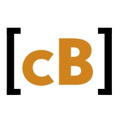
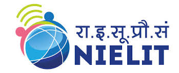

Subradeep
Das
C-DAC HPC-AI certified engineer building ML systems from problem framing to deployment — with hands-on work in bot detection, demand prediction, geospatial AI, and silicon photonics research.

Delivery at Codebucket
Applied technical trainingAbout Me
I am Subradeep — an engineer focused on the space where machine learning, data, and execution discipline meet. My foundation is Electronics and Communication Engineering from NEHU Shillong, strengthened by advanced HPC-AI training at C-DAC Guwahati.
My strongest lane is taking technical work from idea to usable output: understanding requirements, working with data, building models, explaining tradeoffs, coordinating people, and keeping delivery moving. That blend lets me speak both engineering and stakeholder language.
I am especially interested in AI systems that solve operational problems: bot detection, prediction pipelines, remote-sensing intelligence, and research-backed engineering. Outside work, I learn languages, travel, and cook because curiosity keeps the technical brain alive.
Core Expertise
ML Systems
Designing classification and prediction workflows with TensorFlow, scikit-learn, feature pipelines, and model evaluation.
Data Products
Turning raw datasets into analysis, visual insight, and decision support using Python, R, Pandas, Plotly, and statistics.
Technical Delivery
Coordinating tasks, timelines, stakeholders, and documentation so technical teams can ship with clarity and accountability.
Deployment Thinking
Packaging ML-backed applications with Flask, Docker, Nginx, logging, and production-minded handoff practices.
Research Engineering
Applying simulation, tolerance analysis, and fabrication-aware thinking from silicon photonics and ECE research.
Emerging AI
Continuing structured learning across quantum computing, geospatial ML, HPC-AI, and applied AI programmes.
Skills & Expertise
Tools, frameworks, and domains I use to build and coordinate.
AI / Machine Learning
Data & Analytics
Tools & Platforms
Management & Domain
Selected Technical Work
Case studies showing how I frame problems, build systems, and connect technical output with delivery.
Hybrid IRCTC Bot-Detection & Train Search App
Designed as an applied ML product: a behavioral bot-detection layer combined with a train-search intelligence interface for demand heatmaps, punctuality scoring, and confirmation-probability estimation.
Design & Fabrication of Higher-Order Chebyshev Filter (MZI)
Research engineering project covering the full path from optical filter design to fabrication-aware validation for a 7th-order MZI Chebyshev bandpass filter on Silicon-on-Insulator.
Proof Behind the Profile
Credentials, research exposure, and verified learning that support the AI, data, and delivery story.
Advanced HPC-AI Training
Focused exposure to AI, high-performance computing, Python workflows, and applied model development.
See resumeAI/ML for Crop Mapping
Remote-sensing and agricultural intelligence training using AI/ML for crop acreage mapping.
View certificateGeodata Processing
Python and ML-based geospatial data processing for analysis, mapping, and decision support.
View certificateQuantum Computing
Structured learning in quantum computing concepts, models, and emerging computation paradigms.
View certificateLightwave Communication
Research exposure in photonics, optical communication systems, filter design, and simulation workflows.
View proofB.Tech in ECE
Engineering foundation in electronics, communication systems, signal processing, and applied research.
View certificateHow I Build With AI Responsibly
A modern project workflow for using AI as an accelerator while keeping human judgment, validation, and documentation at the center.
Frame the Problem
Define the user need, success metric, constraints, risks, and expected decision output before choosing tools.
Prepare the Evidence
Inspect data quality, create baselines, document assumptions, and separate signal from noise early.
Build the Model Path
Compare practical model options, evaluate outputs, and keep the implementation explainable for review.
Package for Use
Turn notebooks or experiments into usable flows with app logic, documentation, deployment notes, and handoff clarity.
Verify With Humans
Review edge cases, failure modes, ethical risks, and stakeholder expectations before treating outputs as decisions.
How I Deliver Technical Work
A practical operating rhythm for turning AI, data, and engineering ideas into reviewable outputs.
Understand & Plan
Clarify the user problem, success metric, constraints, data availability, and delivery risks before building.
Research & Design
Select the right model, architecture, baseline, or workflow, then document why the choice fits the problem.
Build & Iterate
Build in small reviewable passes, validate assumptions, compare outputs, and improve with feedback loops.
Deploy & Coordinate
Package the work clearly, coordinate handoff, track blockers, and make the result usable beyond a notebook.
Coordination Excellence
I keep tasks, owners, dependencies, and stakeholder expectations visible so technical work does not drift.
Engineering Judgment
My ECE and HPC-AI background helps me make realistic plans instead of treating complex builds like simple checklists.
Evidence-Based Decisions
I prefer measurable baselines, model comparisons, validation notes, and clear reasoning over vague “it works” claims.
Experience
Project Coordinator CURRENT
- Coordinate project execution across developers, designers, and stakeholders with clear ownership, timelines, and follow-up loops.
- Translate business requirements into technical tasks so teams can plan, review, and deliver with less ambiguity.
- Use AI/ML and data thinking to identify automation opportunities, reporting gaps, and workflow improvements.
- Support sprint planning, risk review, documentation, and delivery communication with an engineering mindset.
Project Intern
- Worked through applied ML/data tasks, systems integration exercises, and structured technical modules.
- Converted requirements into reproducible workflows, documented outputs, and review-ready technical notes.
Research Lab Member
- Completed a photonics research project under Prof. Subhash Arya on optical communication systems.
- Designed a 7th-order MZI Chebyshev filter; simulated in Lumerical and laid out in KLayout.
- Fabricated on Silicon-on-Insulator (SOI) wafer via Electron Beam Lithography (EBL).
Education
Advanced Certification in HPC-AI
B.Tech — Electronics & Communication Engineering
Intermediate — CBSE
Matriculation — TBSE
Certifications
Quantum Computing
AI/ML for Crop Acreage Mapping
Geodata Processing with Python & ML
Career Edge — Young Professional
Let's Connect
Open to AI/ML roles, technical coordination roles, research collaborations, and applied data projects.